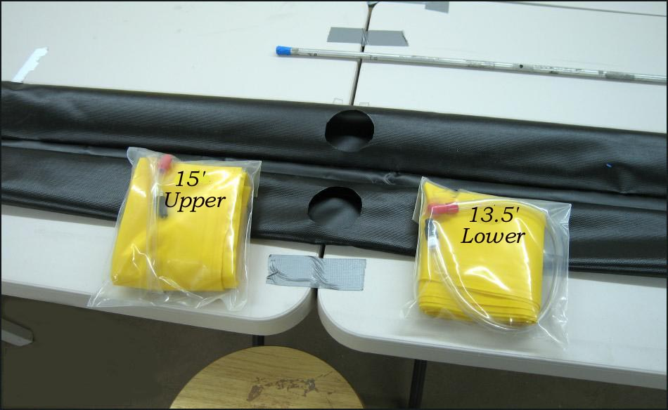

| Sonnet 16 | Menu Last Page Next Page |
|

The Sonnet 16 uses "Folbot" 15' X 3.5" and 13.5' X 3.5" sponsons made of a nylon core coated with urethane. The Sonnet 14 uses 13.5' and 11' sponsons. There are 4 sponsons , 2 per side, on the Sonnet 14 and 16. A 2.5" opening is cut out of the center of each sleeve to allow insertion / removal of the sponsons. Price for the sponsons range from $16.00 to $20.00 each . These low pressure sponsons are filled by blowing them up by mouth. A hand pump is not required. Inflation time for all 4 sponsons is about 1 minute.
|
|